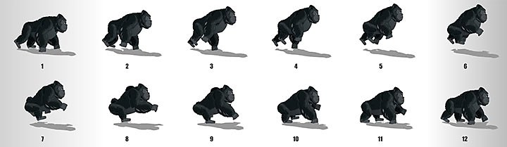

Walk Cycles
Course Details
Video Host: ModernDayJames
Video Duration:12 minutes
Want to understand the basic animation exercise of creating a walk cycle?
Course recommendations to follow along:
- Any 2D animation software
- A digital pen/digital tablet with/without a screen display.
- Basic knowledge of animation ( See 12 principles of animation)
What is a walk cycle?
In animation, a walk cycle is a series of frames or illustrations drawn in sequence that loop to create an animation of a walking character. The walk cycle is looped over and over, thus having to avoid animating each step again.
Why is it important?
To become more capable of depicting movement on a computer screen using your imagination, many animators recommend understanding and mastering the basic walk cycle as a form of training your arm muscles and mind-to-hand coordination.
Creating a walk cycle

Walk cycles can be broken up into four key frames: the forward contact point, the first passing pose, the back contact point, and the second passing pose. Frames that are drawn between these key poses (traditionally known as in-betweens) are either hand-drawn or interpolated using computer software. Besides the apparent move of the legs, many more details are necessary for a convincing walk cycle, like animation timing, movement of the arms, head and torsion of the whole body.There exist many techniques to create walk cycles. Traditionally, walk cycles are hand-drawn, but over time with the introduction of new technologies for new mediums, walk cycles can be made in pixel art, 2D computer graphics, 3D computer graphics, stop motion, and cut-out animation, or using techniques like rotoscoping.
1. Forward contact point.
As with any form of animation, people of all ages can enjoy anime, and there are anime projects that are specially designed for children. However, because of the nature of the plots in anime, this form of animation is often best understood and enjoyed by adults instead of children. For instance, the lengthy plots require viewers to maintain interest in the storyline over the long term, and the complex characters require viewers to be able to both understand and engage with that complexity. Anime storylines are also often focused on adult themes. While one of the many appealing characteristics of animation in general is its ability to appeal and be tailored to a wide range of people, anime often focuses on adult themes. Even when anime incorporates humor (which it often does), the humor is frequently used to alleviate a darker or more violent theme that is suitable primarily for adult viewing.
2. First passing pose.

The passing pose is the moment one leg passes the other. Here, the front foot is on the ground, while the back foot is raised striding forwards. It should be a reverse of your forward contact point, as your character shifts their weight into the opposite leg ahead of moving onwards.
3. Back contact point.
At this point, the position of your character’s legs should have reversed. Now the back leg is planted firmly on the ground, out in front. The front leg, meanwhile, is raised off the ground, towards the back of the body.
4. Second passing pose.
The initial cycle completes as your character transitions into the second passing pose. Here, the original front foot moves back to the front. The original back foot returns to the rear. The two legs crossover, ending in the same place as the sketch in step one began.
Back to courses {% if user.is_authenticated %} Mark as finished {% endif %}